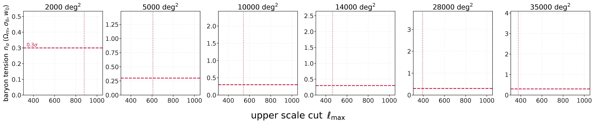

$\mathcal{S}_{j,i}$ — the coefficients of scale $j$ whose SNR falls in bin $i$
sum of absolute coefficients per band and SNR bin → encodes information from every pixel (peaks, voids, ...)
The inference pipeline: neural posterior estimation
+ noise wavelet transform
condition
Gaussian\(\mathcal{N}(0,\mathbf{1})\)
Density estimatorconditional MAF
Posterior\(p(\theta\mid x)\)
training objective
\(\mathcal{L}=-\log p_\phi(\theta\mid x)\)
§1 Baryonic Bias Scales with Survey Area
At 14,000 deg² (Stage IV): $C_\ell$ shows 2.2σ, peaks and the $\ell_1$-norm 3.6σ
At full sky: $C_\ell$ reaches $\sim3.5\sigma$, both HOS exceed 6σ
HOS show higher bias than $C_\ell$: more sensitive to the baryonically-contaminated small scales
measured at full map resolution: $\ell_{\rm max}=1024$ for $C_\ell$, all four wavelet bands for the HOS
§1 Buying back an unbiased inference costs $C_\ell$ most of its multipole range, and the starlet its finest band
Criterion: bring the baryonic bias below 0.3$\sigma$
$C_\ell$ takes a sliding cut, tuned to what is safe at each area: $\ell_{\rm max} = 860$ at 2,000 deg² falling to 340 at full sky
The starlet concentrates the contamination in its finest band, so dropping $j=1$ suffices at every area

$C_\ell$→a cut tuned to each area
starlet→whole bands only, so we cut more than we need
§1 Are HOS still useful?
On baryon-safe scales
Starlet $\ell_1$-norm: ×1.8 tighter than $C_\ell$ at Stage IV, ×2.6 at full sky
Different degeneracy directions in the $w_0$ planes → HOS always complementary to $C_\ell$
Takeaway
HOS are not merely deep-non-linear probes: the signal persists on quasi-linear scales
A floor:
our whole-band cut is not optimised,
better baryon modelling will push the analysis deeper into the non-linear regime, where the HOS gain is larger
If a learned summary is already optimal, why hand-build a statistic at all?
κ maps→
?
summary→cosmology
The claim is usually made against the power spectrum — a benchmark any non-Gaussian summary already beats.
Against a strong hand-crafted higher-order statistic, under matched conditions, it hasn't really been tested fairly.
A neural compressor trained to be
information-optimal
each cell holds the ℓ1 weight of the pixels landing in it
A cross-map collapses each pair into one field before the statistic is taken. The joint ℓ1-norm keeps the whole plane, and needs no new map at all.
§2 Read the bins jointly and the analytical ℓ1-norm reaches the optimal CNN
The tie holds on every parameter, over 9,000 mock observations.
§3 Nulling promises localized scale cuts... For HOS it inflates the contours instead
the promise
broad, overlapping↓nulled, localized
A fixed angular scale stops mixing redshifts, so the cut can go only where the systematic is
the problem
blue = the ℓ1-norm in the nulled basis
BNT = a fixed, invertible transform → nothing can have been lost...
§3 The information is recoverable — by the summary that reads the bins jointly
figure of merit retained under the nulling
one bin at a timeℓ1, auto-maps
0.16×
+ one derived field per pairℓ1 + product cross-maps
0.24×
each pair's full 2-D distributionjoint ℓ1-norm
0.72×
all four channels at onceCNN, VMIM-trained
~1×
Same four summaries as before. In the standard frame they spanned 38%; here, a factor of six.
nulled frame over standard
dashed = the nulled frame
So nulling can be kept as a mitigation at no cost in constraining power, provided some stage of the pipeline reads the bins jointly. And the power spectrum was this ladder's first rung all along.
Conclusions
Q1Does baryonic feedback put the non-Gaussian information out of reach?✓No. Cut every contaminated scale and the ℓ1-norm is still ×1.8 tighter at Stage IV, ×2.6 at full sky.
Q2Do we need deep learning to extract it?✓No. Read the bins jointly and a fixed wavelet statistic matches the optimal compressor, with no training.
Q3Can redshift nulling then be used with higher-order statistics?✓Yes, provided the summary reads the bins jointly. There is no loss of information, and the inflation is a frame artifact.
What is left: the genuinely three- and four-bin structure a pairwise statistic cannot reach.
Q1 With no feedback model at all, cutting every contaminated scale still leaves the ℓ1-norm ahead of the power spectrum
figure of merit relative to the power spectrum, on each statistic's own baryon-safe scales
A floor: no feedback model, every contaminated scale discarded.
Q2 Build joint reading in, and a fixed wavelet statistic reaches the ceiling
three-parameter figure of merit, matched pipeline
one bin at a timeℓ1, auto-maps
2448
+ a derived field per pairℓ1 + product cross-maps
3045
each pair's full 2-D distributionjoint ℓ1-norm, new
3371
all four channels at onceCNN, VMIM-trained
3326
↑ the ceiling, a compressor trained to be optimal
a tie on every parameter, over 9,000 mock observations — not a figure-of-merit artefact
Q2 Given the same constraining power, everything else decides
constraining powerjoint ℓ1-norm 3371 ≈ CNN 3326
fixed — the ℓ1-norm
Fixed before any simulation is seen
No training, nothing to overtrain
Survives a change of survey or forward model
Open to inspection, scale by scale
Analytically predictable on large scales
learned — the compressor
Retrained for every change of configuration
Seed-to-seed scatter
Ten coordinates with no meaning to inspect
Cannot tell physics from simulator artefacts
The compressor keeps one advantage: it reads the bins jointly for free. Which matters next.
§0 We are all optimizing statistics; the two-point camp still does not trust the contours
🧐
the 2-point camp
"I don't believe any of your contours."
what would make HOS flagship-grade?
blinding
robust covariance
emulators
systematics
analytical cross-checks
non-Gaussian likelihood
method limits
null / validation tests
simplicity
Part 1 of 2
Do baryons break HOS?
Baryonic feedback, the wavelet ℓ1-norm, and the BNT transform.
§1 Stage IV is no longer statistics-limited, it is systematics-limited
to trust a statistic
Before we trust any summary statistic, we have to quantify how each systematic affects it, and at the contour level (the inferred parameters).
Illustris: baryonic feedback reshaping the cosmic web
the systematic at hand
Baryonic feedback (AGN, supernovae) suppresses matter on small scales, mimicking cosmological signal and biasing inference, exactly where the constraining power lives and where the feedback models disagree most.
core questions
How does unmodeled baryonic feedback bias our non-Gaussian statistics?
After safe scale cuts, do HOS still outperform the power spectrum?
Part 2 of 2
Learned vs analytical, and can we trust it?
The analytical ℓ1-norm vs a learned CNN, calibration, and the answer to the BNT puzzle.
§2 Part 2: learned summaries, and the BNT cliffhanger
the question
How much better are "optimal", learned summaries than our hand-built summary statistics?
what is a learned summary?
A neural network that compresses the κ map directly into a few numbers, instead of a hand-designed statistic
Trained with VMIM to keep the cosmological information: the "optimal learned compressor"
and, left over from Part 1
...and what the hell is going on with BNT?
and these largely escape TARP and SBC: the contours look calibrated and are still wrong
the thumb on the scale
ℓ1 is simple, interpretable, inspectable; CNNs are powerful but treacherous
Where the CNN earns its keep: BNT, the channel-mixing win
So the question is not whether the network wins, but what the cost and the risk are buying
§3 Do baryons break HOS? No.
Part 1, baryons
Usable non-Gaussian information persists on baryon-safe scales (the ℓ1-norm beats P(k) ×1.8 at Stage IV, ×2.6 at full sky), cleaned by a single scale cut.
Part 2, learned vs analytical
Read the bins jointly and the hand-built ℓ1-norm matches the optimal learned summary — 3371 against 3326, a tie, both calibrated.
BNT
The apparent BNT break is a frame artifact: what survives tracks how jointly the summary reads the bins — 0.16, 0.24, 0.72, 0.96.
the bigger question
And can we trust higher-order weak lensing? Getting there...
Appendix
Backup
Supporting slides, for questions.
§1 You can see it in the maps: BNT trades deep signal for amplified, correlated noise
before BNTafter BNT: the SNR collapses
§1 The same maps, noiseless: BNT cleanly redistributes the signal
before BNT (noiseless)after BNT (noiseless)
Without shape noise, BNT is a clean, invertible redistribution of the signal (the deep common mode becomes one shallow map plus thin slices). The contour inflation comes from the correlated noise it introduces, not from any lost signal.
§2 Where the cross-bin information lives: the κiκj product buys +24%, and reading each pair jointly buys the rest
add the cross-bin physics carefully
Product κiκj (= ξij): +24% over auto-only
A convolution buys +9%, and is sensitive to the training realisation
2448 → 2671 → 3045 → 3255, and the joint ℓ1 closes it at 3371
A full-sphere cross construction inflates this, but its channels carry 12–20% of their variance at ℓ < 18 against 0.4–1% for the autos. That is leakage. We use only the physically buildable flat-sky arms.
§2 The clincher: a frame artifact, not lost information (one rotation recovers ℓ1, 1.06×) unpublished — not in Paper II
the information was never lost
One fixed whitening rotation Q recovers the full no-BNT FoM3 for ℓ1 too (1.06×)
The collapse is a per-channel frame artifact: mix the bins, or re-rotate once
Confirms the intuition block; closes the Vinciguerra loop
Closes the Vinciguerra loop: their forecast said recovering the BNT SNR for HOS is "highly non-trivial"; here it is, in one fixed rotation. A frames result: a one-point statistic's information content is basis-dependent, and BNT is simply a poor frame for a per-channel statistic.
§3 One story: the optimal tomographic strategy (BNT becomes viable once the summary mixes bins)
problem: the per-bin ℓ1 inflates under BNT→resolution: a summary that reads the bins jointly is unaffected
one escalating story about cross-bin information
P(k) → ℓ1 (much more, even on safe scales) → learned (a tie, both calibrated)
Per-bin statistics cannot access cross-bin info (break under BNT); a channel-mixing compressor can (BNT-lossless)
BNT becomes viable once the summary mixes bins
Forward-looking: a route to baryon-robust, non-Gaussian SBI that keeps BNT's clean per-bin scale cuts without the contour-inflation tax. A next step, not a finished end-to-end measurement.
backup Constraining power against survey area, all three statistics
On baryon-safe scales. Fitted slopes: power spectrum $+1.24$, peaks $+1.37$, $\ell_1$-norm $+1.34$, against the ideal $A^{+3/2}$.
backup The starlet band responses in multipole
This is what "drop $j=1$" removes: the highest-frequency band, everything above $\ell \approx 500$. The other bands are untouched, at every survey area.
backup BNT on the power spectrum: the bin-specific cut is worth ×1.4
Baryon sensitivity localises to the first transformed bin, so the cut goes there alone and bins 2–4 keep $\ell_{\rm max} \approx 1024$: 92 of 120 bandpowers retained against 50 for the global cut. σ(Ωm) −14%, σ(σ8) −19%.
backup Baryonic suppression of the tomographic power spectra
Reaches ≈1.5% by $\ell \approx 1000$. The apparent "high-z bins are worse" ordering is a noise artefact — the noise power dominates the denominator at low z. On noiseless maps the ordering inverts to the physically expected one.
backup Baryonic response of the ℓ1-norm, scale by scale
Concentrated in the positive SNR tail, and vanishing in the noise-dominated bulk ($|\nu| \lesssim 2.5$) — which is why an SNR-space cut is available to higher-order statistics and not to the power spectrum. Left to future work in the paper.
backup Coverage in the nulled frame: every arm still passes
The collapse is calibrated. The wide contours are an honest report of a real loss in that representation, not over-confidence — which is what makes the retention ladder a statement about information rather than about a broken fit.
backup Where the ℓ1-norm’s constraining power sits
Intermediate scales ($j = 2$–3, tens of arcminutes) and moderate signal-to-noise ($|\nu| \approx 1$–2) — mildly non-linear structure, not the rare extreme peaks. Dovetails with Paper I: drop $j=1$ and you keep most of it.
backup The ℓ1-norm across cosmologies
Coloured by $\sigma_8$. The statistic responds smoothly and monotonically across the prior — no training, no emulator, and the dependence is visible by eye.
backup The data: flat-sky tomographic patches
10°×10° gnomonic patches, 80×80 px (7.5′/px), $|b| < 75^{\circ}$. 180 patches per realisation × 50 noise realisations = 9,000 mock observations. Patch size chosen at 10° because gnomonic corner distortion falls from 6.3% at 20° to 1.5% at 10°.
backup The tie, per mock rather than at the median
σ(Ωm), σ(σ8), σ(w0) and FoM3 across 9,000 mocks — medians 3045, 3371, 3326
The answer to “FoM3 is fragile in a degenerate parameter space”: the marginals are quoted alongside it, and this is the population rather than a point. The ± on the medians is the spread over three independently trained compressors, the dominant source of run-to-run variability.
§2 The channel-mixing CNN does not notice the transform at all (0.96×)
same maps, same transform, no cost
Feeding the network the nulled maps gives the same first layer with kernels KB, so “undo the nulling” is one configuration of the first layer — available before any non-linearity, at no capacity cost. The 4% shortfall is an optimisation residual, not lost information.
§1 But could we do better than that? Weak lensing tomography


 the per-bin ℓ1-norm
the per-bin ℓ1-norm